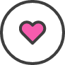

୨୧ · · ♡ · · ୨୧
ALL ABOUT ME <3
I’m currently a Junior at the University of Michigan.
 I value the communities I'm in and want the best for the people around me. I am currently a member of the Stamps Student Advisory Board and hope to make a difference in my community.
I am currently a UM Tech Shop Student Manager. I value my coworkers and customers and hope to expand my technical skills through sales consulting and order fulfilling.
I write for the Michigan Daily. My focus is on the Digital Culture section that is underneath the Arts.
I am hoping to pursue a career in UX Research and Design.
Cats are the best! I love my little Jingle.